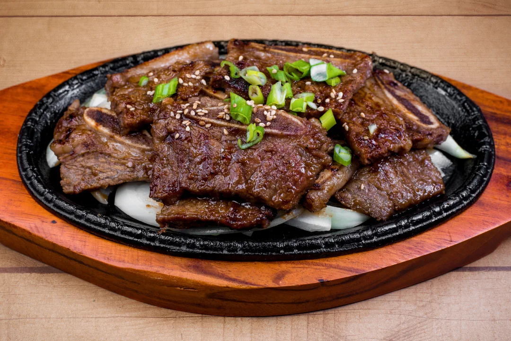

Kalbi (Korean Marinated Short Ribs)

Ever craved delicious Korean food but it was just too expensive in the restaurants? Look no further,
this traditional Korean recipe is simple and easy to follow.
It will yield in delicious ribs and it takes just 15 minutes of prep time and cook time!
Kalbi, also known as Galbi, is one of the staple dishes in Korean Fine Dining. It's a delicious, savoury, and sweet dish that'll leave you wanting more.
Ingredients (4 Servings)
- 3/4 Cup of Soy sauce
- 3/4 Cup of Brown Sugar
- 3/4 Cup of water
- 1 Garlic Clove (minced)
- 2 Green Onions (chopped)
- 1 Tbsp of Asian Sesame Oil (toasted)
- 2 Lb of Korean-style Short ribs (beef chuck flanken, cut 1/3 to 1/2 inch thick across bones)
Directions and preparation
- Stir your soysauce, brown sugar, water, garlic, green onions, and sesame oil in a bowl until the sugar has dissolved
- Place the ribs in a plastic bag, and pour the marinage over the ribs. Squeeze the air out and refridgerate the bag for atleast 3 hours.
- Preheat your grill or pan to medium-high heat and light oil. Remove the ribs from the bag and shake off the excess marinade.
- Cook the ribs until the meat nearest to the bone is pink but not bloody. This will usually take 5-7 minutes per side.
Nutritional Facts
Per serving: 1096 calories; protein 35.9g; carbohydrates 44.9g; fat 85.6g; cholesterol 172.4mg; sodium 2831.1mg.
Back to homepage